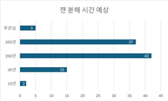

자판기 사용, 우리는 환경 오염에 얼마나 무지한가?
환경 오염의 주범, 자판기. 통계로 알아보자
한유진, 김가은, 박서현, 방아현
현재 환경오염 문제는 전 세계적으로 떠오르고 있다. 2024년 가장 환경오염이 심한 국가의 순위를 매겼을 때 우리나라는 57위를 차지했다. 환경오염의 대표적인 예로는 태평양 거대 쓰레기 지대가 있다. 태평양 거대 쓰레기 지대는 부유성 쓰레기들이 원형 순환 해류와 바람의 영향으로 쓰레기가 한 곳에 모여 거대한 쓰레기 지대를 이루고 있는 것으로, 흔히 쓰레기 섬이라고 한다. 1950년부터 만들어지기 시작한 쓰레기 섬은 10년마다 10배씩 증가해 현재는 대한민국의 약 16배 정도의 크기이며 8만t 정도의 무게가 나간다. 이와 같은 환경오염으로 해양 생물들은 피해를 보고 있다. 실제로 주변 지역에서 잡힌 어류를 조사한 결과 35%의 물고기 뱃속에 미세플라스틱이 있음이 확인된 사례가 있다.


좌, 태평양 쓰레기 지대. 우, 원형 순환 해류
우리 주변에는 환경오염을 일으키는 것이 어떤 것이 있을까? 바로 학교나 길거리에서 자주 볼 수 있는 자판기이다. 5월 29일부터 31일까지 총 3일간 3학년 9반에서 상동고 학생을 대상으로 ‘자판기 사용이 환경에 끼치는 영향’에 관한 설문 조사를 실시했다. 이 설문 조사에 따르면 “현재 환경오염이 얼마나 심각하다고 생각하시나요?”의 답변으로 매우 심각하다가 59%, 심각하다가 32%로 총 91%의 학생들이 현재 환경오염이 심각하다고 인식하고 있다. 그렇다면 과연 학생들은 자판기 사용이 환경오염의 원인이 될 수 있다는 것을 인지하고 있을까?
조사한 학생들의 86%는 일주일에 적어도 한번 자판기를 사용한다고 밝혔다. 자판기에는 빵, 과자, 음료수 등 다양한 간식이 판매되고 있다. 빵은 비닐 또는 플라스틱, 음료수는 캔 또는 플라스틱, 과자는 비닐 종류의 쓰레기를 유발한다. 이와 같은 쓰레기들이 완전히 분해되는 데에 얼마나 걸릴까? ‘자판기 사용이 환경에 끼치는 영향’에 관한 설문 조사를 바탕으로 학생들의 인식과 실제 걸리는 시간을 비교하여 설명해보려 한다. 플라스틱이 완전히 분해되는 데에는 대략 500년에서 1000년, 캔이 완전히 분해되는 데에는 대략 50년에서 200년, 비닐이 완전히 분해되는 데에는 대략 20년에서 100년이 걸린다.

플라스틱, 캔, 비닐이 완전히 분해되는 시간에 대해 질문했을 때 각 문항마다 5%의 무관심에 더불어 43%, 53%, 72%의 오답률을 보였다. 각 문항에 대해 큰 오답률을 보였음을 근거로 우리가 환경오염에 얼마나 무지한지 알 수 있을 뿐만 아니라 앞서 언급했던 것처럼 대다수의 학생들은 환경오염이 심각하다고 생각하고있음에도 오히려 환경오염을 악화시키는 많은 자판기 이용으로 환경 오염에 대한 무책임한 태도 또한 드러내고 있다. 우리가 아무 생각 없이 자판기에서 간식들을 사고 먹은 후 버리는 쓰레기는 분해되는 데에 오랜 시간이 걸린다. 또한, 이로 인해 일회용품 쓰레기는 증가하는 결과를 낳게 되며 결국 환경오염은 끊임없이 심해진다. 그렇다면 우리가 더 나은 환경을 위해 작은 노력, 자판기 사용을 줄여보는 것은 어떨까?
퀴즈 하러 가기